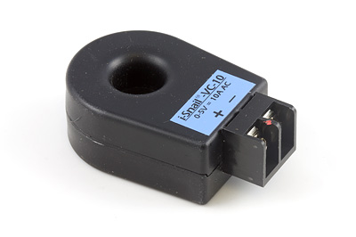

30 Amp Current Sensor AC/DC
Product Features
Measure up to 30 amps DC or ±30 amps AC with this current sensor. Separate outputs for AC and DC components connect to an analog input.
Product Description
The sensor measures AC current up to 30 Amps and DC Current from -30Amps to +30Amps. Dual outputs allow the user to measure both the AC and DC components of complex current waveforms separately.
AC Current Sensor 10Amp

Product Features
The sensor measures up to 10 amps AC on a wire that passes through its window. Connects to an analog input.
Product Description
The i-Snail-VC is a self powered AC current transducer that provides a 0-5V dc analog signal proportional to the AC current flowing through the device wire window (sine wave RMS calibrated).
The i-Snail-VC is ideal for load monitoring without the need for an external power supply. Factory calibrated, fixed ranges ensure superior accuracy and eliminate configuration and adjustments in the field, saving time and avoiding confusion. Color coded labels allow for easy identification of full scale range.
The 13.7mm (0.54") wire window accommodates a conductor up to AWG #2. Multiple turns of the primary wire may be used to alter the input range. Output voltage is clamped at 6.5V, and the unit delivers a linear output up to 120% overload (6V).
AC Current Sensor 25Amp
Product Features
The i-Snail VC-25 measures up to 25 amps AC on a wire that passes through its window. Connects to an analog input.
Product Description
The i-Snail-VC is a self powered AC current transducer that provides a 0-5V dc analog signal proportional to the AC current flowing through the device wire window (sine wave RMS calibrated).
The i-Snail-VC is ideal for load monitoring without the need for an external power supply. Factory calibrated, fixed ranges ensure superior accuracy and eliminate configuration and adjustments in the field, saving time and avoiding confusion. Color coded labels allow for easy identification of full scale range.
The 13.7mm (0.54") wire window accommodates a conductor up to AWG #2. Multiple turns of the primary wire may be used to alter the input range. Output voltage is clamped at 6.5V, and the unit delivers a linear output up to 120% overload (6V).
Note: The i-Snail current transducer measures the current in a single AC wire (either the positive or the negative). If you put the whole cable through the window the + and - wires will cancel each other out and the sensor will read a null current value.
The formula for converting SensorValue into AC Amps (RMS) is:
AC Amps (RMS) = SensorValue/40
AC Current Sensor 50Amp
Product Features
The i-Snail VC-50 measures up to 50 amps AC on a wire that passes through its window. Connects to an analog input.
Product Description
The i-Snail-VC is a self powered AC current transducer that provides a 0-5V dc analog signal proportional to the AC current flowing through the device wire window (sine wave RMS calibrated).
The i-Snail-VC is ideal for load monitoring without the need for an external power supply. Factory calibrated, fixed ranges ensure superior accuracy and eliminate configuration and adjustments in the field, saving time and avoiding confusion. Color coded labels allow for easy identification of full scale range.
The 13.7mm (0.54") wire window accommodates a conductor up to AWG #2. Multiple turns of the primary wire may be used to alter the input range. Output voltage is clamped at 6.5V, and the unit delivers a linear output up to 120% overload (6V).
Note: The i-Snail current transducer measures the current in a single AC wire (either the positive or the negative). If you put the whole cable through the window the + and - wires will cancel each other out and the sensor will read a null current value.
The formula for converting SensorValue into AC Amps (RMS) is:
AC Amps (RMS) = SensorValue/20
AC Current Sensor 100Amp
Product Features
The i-Snail VC-100 measures up to 100 amps AC on a wire that passes through its window. Connects to an analog input.
Product Description
The i-Snail-VC is a self powered AC current transducer that provides a 0-5V dc analog signal proportional to the AC current flowing through the device wire window (sine wave RMS calibrated).
The i-Snail-VC is ideal for load monitoring without the need for an external power supply. Factory calibrated, fixed ranges ensure superior accuracy and eliminate configuration and adjustments in the field, saving time and avoiding confusion. Color coded labels allow for easy identification of full scale range.
The 13.7mm (0.54") wire window accommodates a conductor up to AWG #2. Multiple turns of the primary wire may be used to alter the input range. Output voltage is clamped at 6.5V, and the unit delivers a linear output up to 120% overload (6V).
Note: The i-Snail current transducer measures the current in a single AC wire (either the positive or the negative). If you put the whole cable through the window the + and - wires will cancel each other out and the sensor will read a null current value.
The formula for converting SensorValue into AC Amps (RMS) is:
AC Amps (RMS) = SensorValue/10
Current Status Switch
Product Features
The i-Snail-S closes an electrical switch when currents greater than 0.15A are detected in the wire that passes through its window.
Product Description
The i-Snail-S switch provides an accurate and cost effective method of monitoring the on/off status of electric loads including fans, pumps, motors, heaters and virtually any AC powered device.
The i-Snail-S serves as an ultra sensitive Go/No-Go load sensor. The dry contact relay (N.O.) closes when a minimum amount (150mA) of AC current is flowing through its monitored line. The device is ideal for monitoring the running state of fans, motors, pumps, heaters or any device that is AC powered, including large and small loads.
The output is a bi-directional solid state relay with a low turn on resistance of less than 4 ohms. The output may be interfaced to PLCs, DDC panels or other relays. The advanced hysteresis and transient detection circuitry prevent chattering and false switching due to line spikes and transients.
The i-Snail-S features a rugged enclosure with integrated barrier strip terminal block for easy wiring in the field.
Note: The i-Snail Current Status Switch measures the current in a single AC wire (either the positive or the negative). If you put the whole cable through the window the + and - wires will cancel each other out and the sensor will read a null current value.
DC Current Sensor 0-10mA
Product Features
This sensor measures up to 10mA DC and connects to an analog input.
Product Description
This DC Current sensor measures DC current, up to 10mA. Powered by an external 12VDC power supply, the DC Current Sensor provides a 0 to 5VDC analog signal that is linearly proportional to the current measured at the terminal blocks.
The DC Current Sensor can easily be mounted using the screw holes, or on a 35mm wide DIN rail for quick installation. The terminal blocks accommodate conductors of up to AWG #16.
In order to measure the current, the sensor has an internal 50 Ohm resistor. This will result in a slight voltage drop before the voltage gets to the device requiring the power. Consequently, the “leftover” voltage might not be high enough to power the device, especially if the power supply has a voltage close to the device’s minimum voltage requirements. As a point of comparison, using a 9V battery running through an LED with a forward voltage of 1.8V and a 1000 Ohm resistor, there is an approximate drop of 0.35V due to the 50 Ohm sensing resistor on the 10mA DC Current Sensor. The maximum voltage drop is 0.5V, when the sensor is measuring 10mA.
The output of this sensor is not clamped at 5V. If the current being measured exceeds the rated input current, more than 5V will appear at the output signal. This can damage the Phidget Board (or any other ADC) that it is attached to if the output signal exceeds 5V for an extended period of time.
The current sensor connects to an analog input on Phidgets I/O boards.
The formula to translate the SensorValue into Current is:
I(mA) = SensorValue * 0.01
DC Current Sensor 0-100mA
Product Features
This sensor measures up to 100mA DC and connects to an analog input.
Product Description
This DC Current sensor measures DC current, up to 100mA. Powered by an external 12VDC power supply, the DC Current Sensor provides a 0 to 5VDC analog signal that is linearly proportional to the current measured at the terminal blocks.
The DC Current Sensor can easily be mounted using the screw holes, or on a 35mm wide DIN rail for quick installation. The terminal blocks accommodate conductors of up to AWG #16.
In order to measure the current, the sensor has an internal 5 Ohm resistor. This will result in a slight voltage drop before the voltage gets to the device requiring the power. Consequently, the “leftover” voltage might not be high enough to power the device, especially if the power supply has a voltage close to the device’s minimum voltage requirements. As a point of comparison, using a 12V battery running a 160 Ohm Load, there is an approximate drop of 0.375V due to the 5 Ohm sensing resistor on the 100mA DC Current Sensor. The maximum voltage drop is 0.5V, when the sensor is measuring 100mA.
The output of this sensor is not clamped at 5V. If the current being measured exceeds the rated input current, more than 5V will appear at the output signal. This can damage the Phidget Board (or any other ADC) that it is attached to if the output signal exceeds 5V for an extended period of time.
The current sensor connects to an analog input on Phidgets I/O boards.
The formula to translate the SensorValue into Current is:
I(mA) = SensorValue * 0.1
DC Current Sensor 0-1A
Product Features
This sensor measures up to 1A DC and connects to an analog input.
Product Description
This DC Current sensor measures DC current, up to 1A. Powered by an external 12VDC power supply, the DC Current Sensor provides a 0 to 5VDC analog signal that is linearly proportional to the current measured at the terminal blocks.
The DC Current Sensor can easily be mounted using the screw holes, or on a 35mm wide DIN rail for quick installation. The terminal blocks accommodate conductors of up to AWG #16.
In order to measure the current, the sensor has an internal 0.5 Ohm resistor. This will result in a slight voltage drop before the voltage gets to the device requiring the power. Consequently, the “leftover” voltage might not be high enough to power the device, especially if the power supply has a voltage close to the device’s minimum voltage requirements. As a point of comparison, using a 12V battery running a 16 Ohm Load, there is an approximate drop of 0.375V due to the 0.5 Ohm sensing resistor on the 100mA DC Current Sensor. The maximum voltage drop is 0.5V, when the sensor is measuring 1000mA.
The output of this sensor is not clamped at 5V. If the current being measured exceeds the rated input current, more than 5V will appear at the output signal. This can damage the Phidget Board (or any other ADC) that it is attached to if the output signal exceeds 5V for an extended period of time.
The current sensor connects to an analog input on Phidgets I/O boards.
The formula to translate the SensorValue into Current is:
I(mA) = SensorValue
0-50A DC Current Transducer
Product Features
This current transducer measures up to 50 amps DC on a wire that passes through its window.
Product Description
This series of DC transducers are a set of hall-effect based sensors that can measure the amount of current flowing through a wire simply by threading the wire through the sensor's window. You can thread the same wire through multiple times and divide the result by the number of times it's been threaded through in order to achieve higher resolution. This sensor can measure DC Current values from 0 to 50 Amps.
You can convert from SensorValue with the following formula (SensorValue is equal to the return voltage of the sensor multiplied by 200):
Current (A) = SensorValue * 0.05
This sensor requires a ±12V power supply. You can use the 5V to ±12V Sensor Adapter as a simple option to connect to a InterfaceKit.
0-100A DC Current Transducer
Product Features
This current transducer measures up to 100 amps DC on a wire that passes through its window.
Product Description
This series of DC transducers are a set of hall-effect based sensors that can measure the amount of current flowing through a wire simply by threading the wire through the sensor's window. You can thread the same wire through multiple times and divide the result by the number of times it's been threaded through in order to achieve higher resolution. This sensor can measure DC Current values from 0 to 50 Amps.
You can convert from SensorValue with the following formula (SensorValue is equal to the return voltage of the sensor multiplied by 200):
Current (A) = SensorValue * 0.1
This sensor requires a ±12V power supply. You can use the 5V to ±12V Sensor Adapter as a simple option to connect to a InterfaceKit.
0-250A DC Current Transducer
Product Features
This current transducer measures up to 250 amps DC on a wire that passes through its window.
Product Description
This series of DC transducers are a set of hall-effect based sensors that can measure the amount of current flowing through a wire simply by threading the wire through the sensor's window. You can thread the same wire through multiple times and divide the result by the number of times it's been threaded through in order to achieve higher resolution. This sensor can measure DC Current values from 0 to 50 Amps.
You can convert from SensorValue with the following formula (SensorValue is equal to the return voltage of the sensor multiplied by 200):
Current (A) = SensorValue * 0.25
This sensor requires a ±12V power supply. You can use the 5V to ±12V Sensor Adapter as a simple option to connect to a InterfaceKit.
±50A DC Current Transducer
Product Features
This bi-directional current transducer measures ±50 amps DC on a wire that passes through its window.
Product Description
This series of DC transducers are a set of hall-effect based sensors that can measure the amount of current flowing through a wire simply by threading the wire through the sensor's window. You can thread the same wire through multiple times and divide the result by the number of times it's been threaded through in order to achieve higher resolution. This sensor can measure Current in either direction; from -50 to 50 Amps. A bi-directional current sensor is ideal for applications when the direction of the current is not guaranteed to always flow the same way- for example, you could measure the current output of a battery, and also monitor the current consumed by the battery when it is charging. You can convert from SensorValue with the following formula (SensorValue is equal to the return voltage of the sensor multiplied by 200):
Current (A) = (SensorValue * 0.1) - 50
This sensor requires a ±12V power supply. You can use the 5V to ±12V Sensor Adapter as a simple option to connect to a InterfaceKit.
±100A DC Current Transducer
Product Features
This bi-directional current transducer measures ±100 amps DC on a wire that passes through its window.
Product Description
This series of DC transducers are a set of hall-effect based sensors that can measure the amount of current flowing through a wire simply by threading the wire through the sensor's window. You can thread the same wire through multiple times and divide the result by the number of times it's been threaded through in order to achieve higher resolution. This sensor can measure Current in either direction; from -50 to 50 Amps. A bi-directional current sensor is ideal for applications when the direction of the current is not guaranteed to always flow the same way- for example, you could measure the current output of a battery, and also monitor the current consumed by the battery when it is charging. You can convert from SensorValue with the following formula (SensorValue is equal to the return voltage of the sensor multiplied by 200):
Current (A) = (SensorValue * 0.1) - 100
This sensor requires a ±12V power supply. You can use the 5V to ±12V Sensor Adapter as a simple option to connect to a InterfaceKit.
±250A DC Current Transducer
Product Features
This bi-directional current transducer measures ±250 amps DC on a wire that passes through its window.
Product Description
This series of DC transducers are a set of hall-effect based sensors that can measure the amount of current flowing through a wire simply by threading the wire through the sensor's window. You can thread the same wire through multiple times and divide the result by the number of times it's been threaded through in order to achieve higher resolution. This sensor can measure Current in either direction; from -50 to 50 Amps. A bi-directional current sensor is ideal for applications when the direction of the current is not guaranteed to always flow the same way- for example, you could measure the current output of a battery, and also monitor the current consumed by the battery when it is charging. You can convert from SensorValue with the following formula (SensorValue is equal to the return voltage of the sensor multiplied by 200):
Current (A) = (SensorValue * 0.1) - 250
This sensor requires a ±12V power supply. You can use the 5V to ±12V Sensor Adapter as a simple option to connect to a InterfaceKit.
We Provide:
- To be accessible, friendly, and helpful at all times.
- To answer the phone when you call, 24/7/365.
- Reply to your emails and support tickets within 24 hours.
- To provide timely information about new hardware.
- To provide all design documentations.
Please fulfill following request form to get more information!